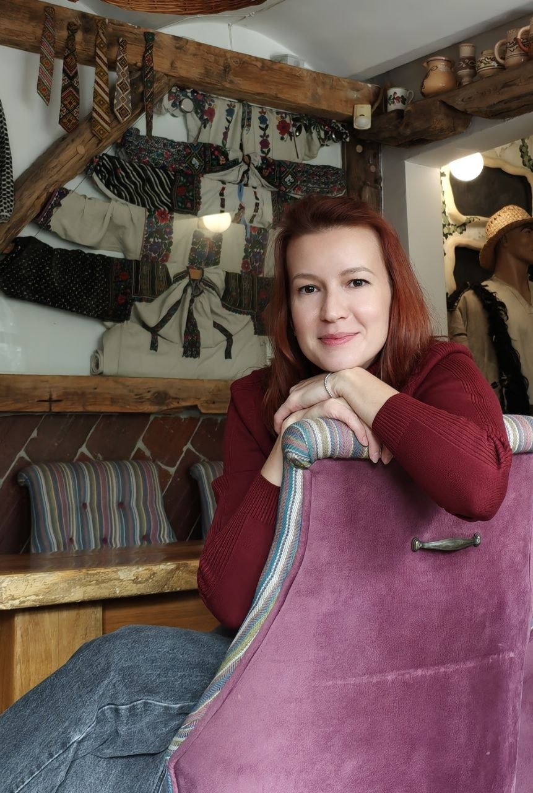
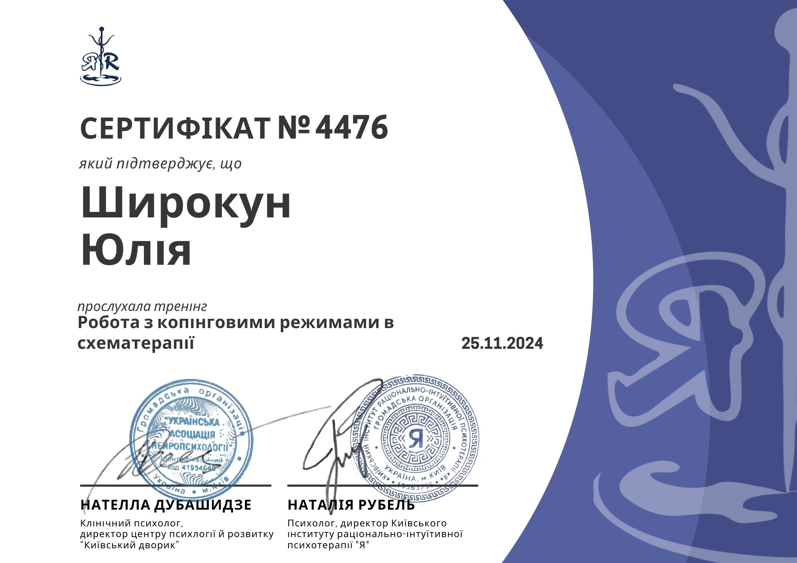
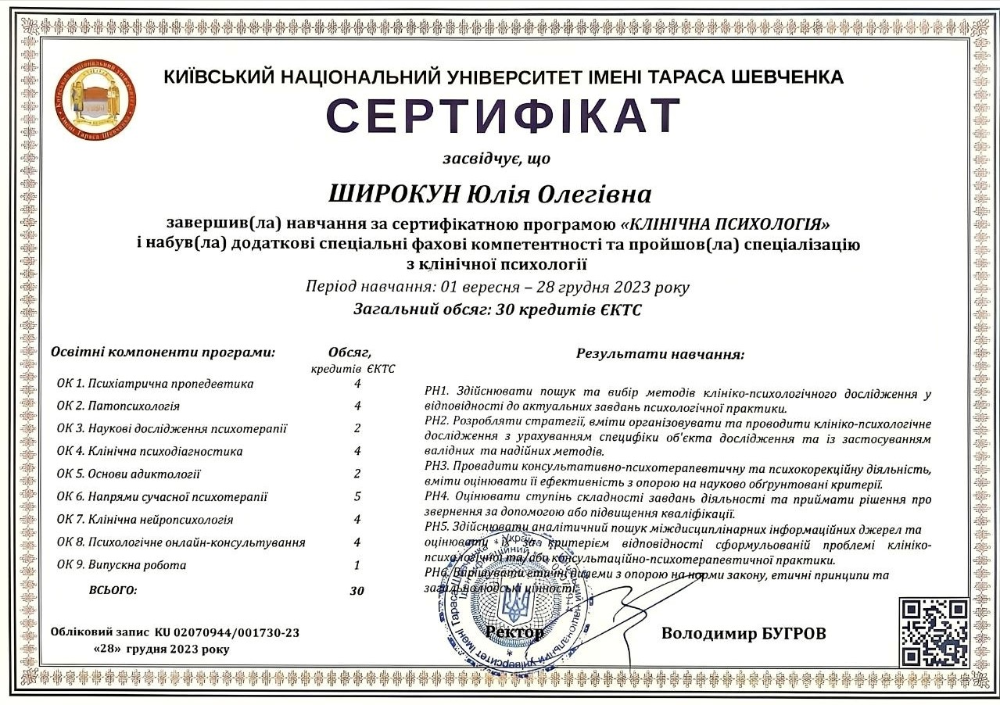
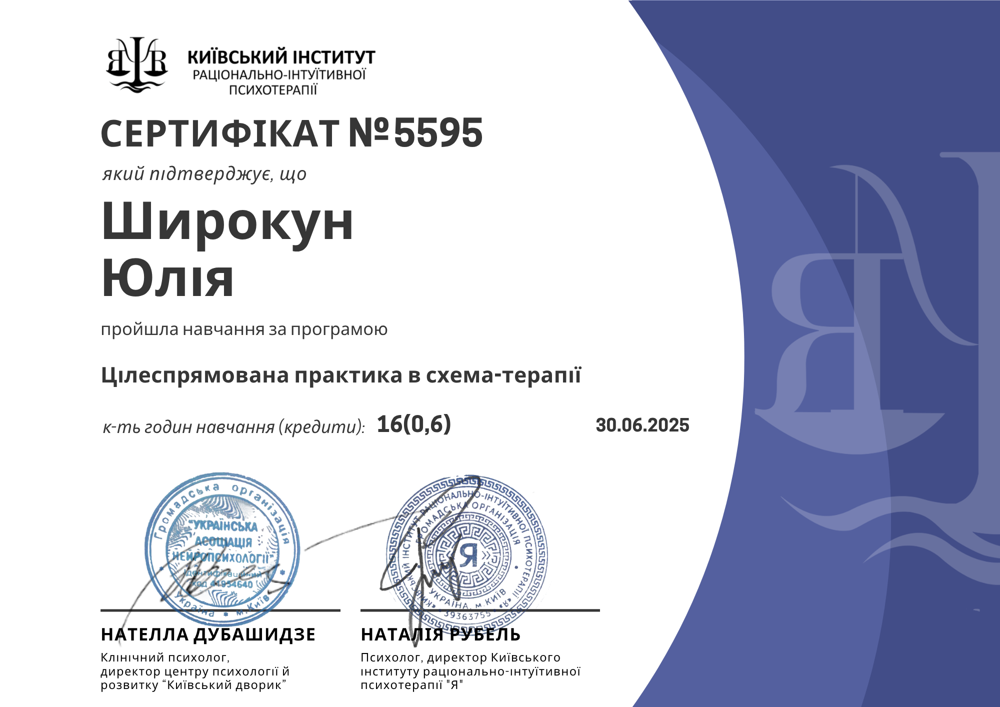
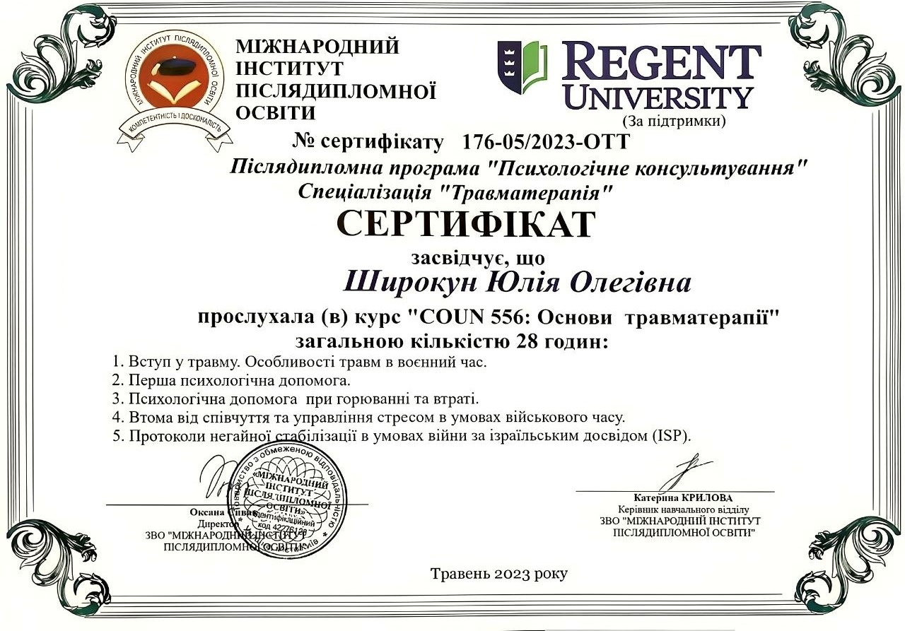
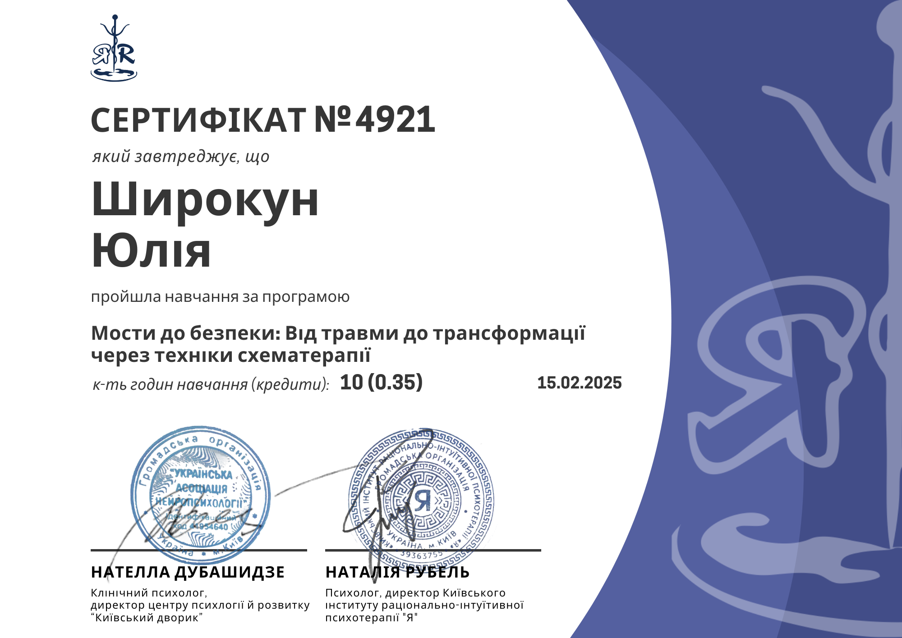
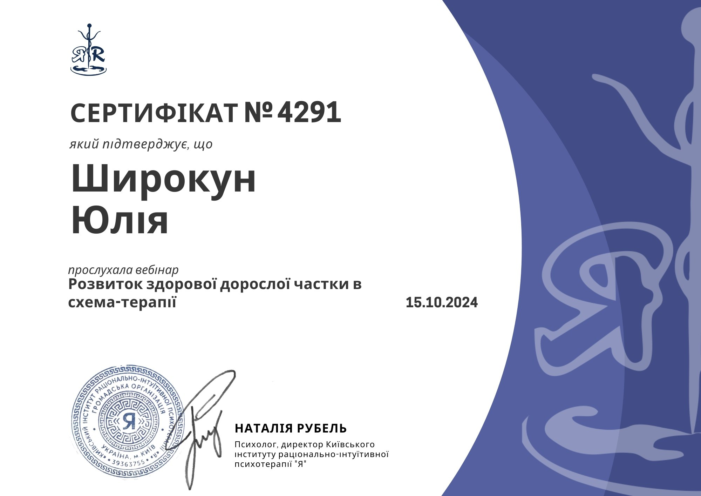
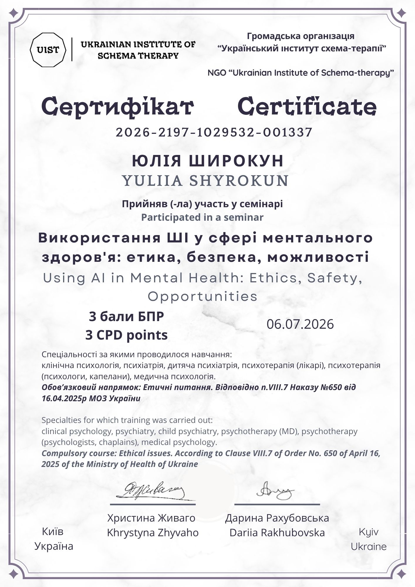

КЛІНІЧНИЙ ПСИХОЛОГ
Юлія
Широкун
Коли звичне нестерпне, дбайливо плекаємо нове
Психотерапевтична допомога у методах схема-терапії та травмофокусованої когнітивно-поведінкової терапії.
Онлайн та офлайн консультації
ЗАПИСАТИСЯ НА КОНСУЛЬТАЦІЮ
ЗНАЙОМСТВО
Про мене
Вітаю! Я — Юлія Широкун, клінічний психолог.
Мій шлях у психологію був усвідомленим рішенням, до якого я прийшла у зрілому віці. Для мене бути психологом — це передусім бути уважним до досвіду кожного, приймати без осуду та створювати можливість для змін.
У відповідь на виклики воєнного часу у 2023 році я здобула спеціалізацію з клінічної психології, пройшла навчання з основ психотравматології та травмафокусованої КПТ. Тоді ж почала працювати в психіатричній лікарні з діючими військовими. Цей досвід поглибив моє розуміння травматичних переживань і навчив бути поруч із людьми у найскладніші періоди їхнього життя.
Згодом мою особливу увагу привернула схема-терапія — підхід, який допомагає зрозуміти, як минулий досвід впливає на наше ставлення до себе, стосунки з іншими та звичні способи реагування. Мені близька можливість не лише працювати з актуальними переживаннями, а й досліджувати глибинні причини труднощів та поступово змінювати звичні шаблони, які заважають жити повноцінним життям.
Сьогодні я працюю в благодійному фонді та розвиваю приватну практику.

1
2 3
3
 4
4

5
6
7 8
8

9 10
10
 11
11

12ЗВ'ЯЗОК
Контакти
Якщо ви хочете обговорити можливість роботи, напишіть мені зручним способом.
Працюю онлайн та офлайн. Щоб узгодити формат, час і деталі першої зустрічі, зв'яжіться зі мною через Telegram або Instagram.
Телефон: [ВКАЖІТЬ НОМЕР ТЕЛЕФОНУ]
[ВКАЖІТЬ МІСТО / АДРЕСУ ДЛЯ ОФЛАЙН-КОНСУЛЬТАЦІЙ, ЯКЩО ПОТРІБНО]